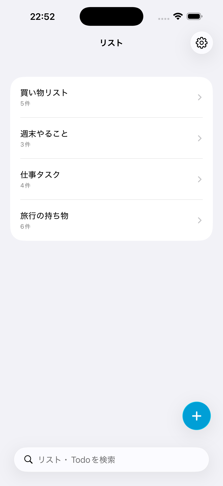
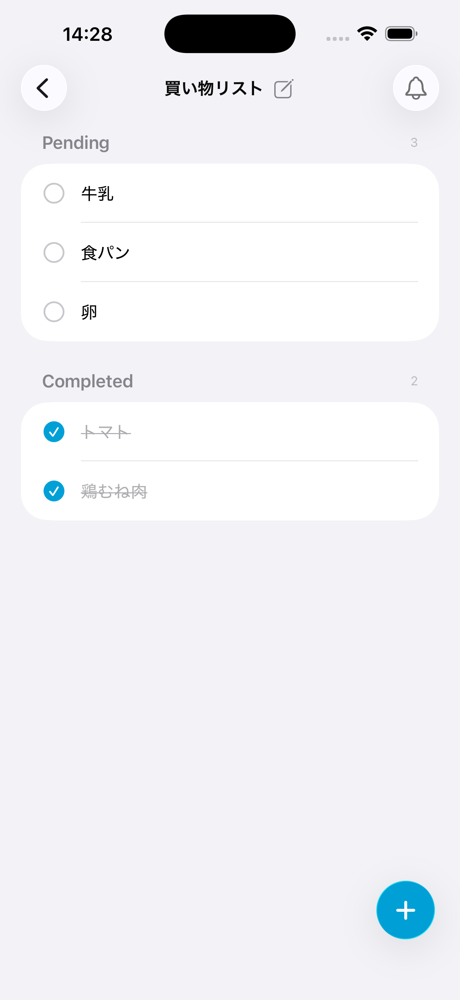
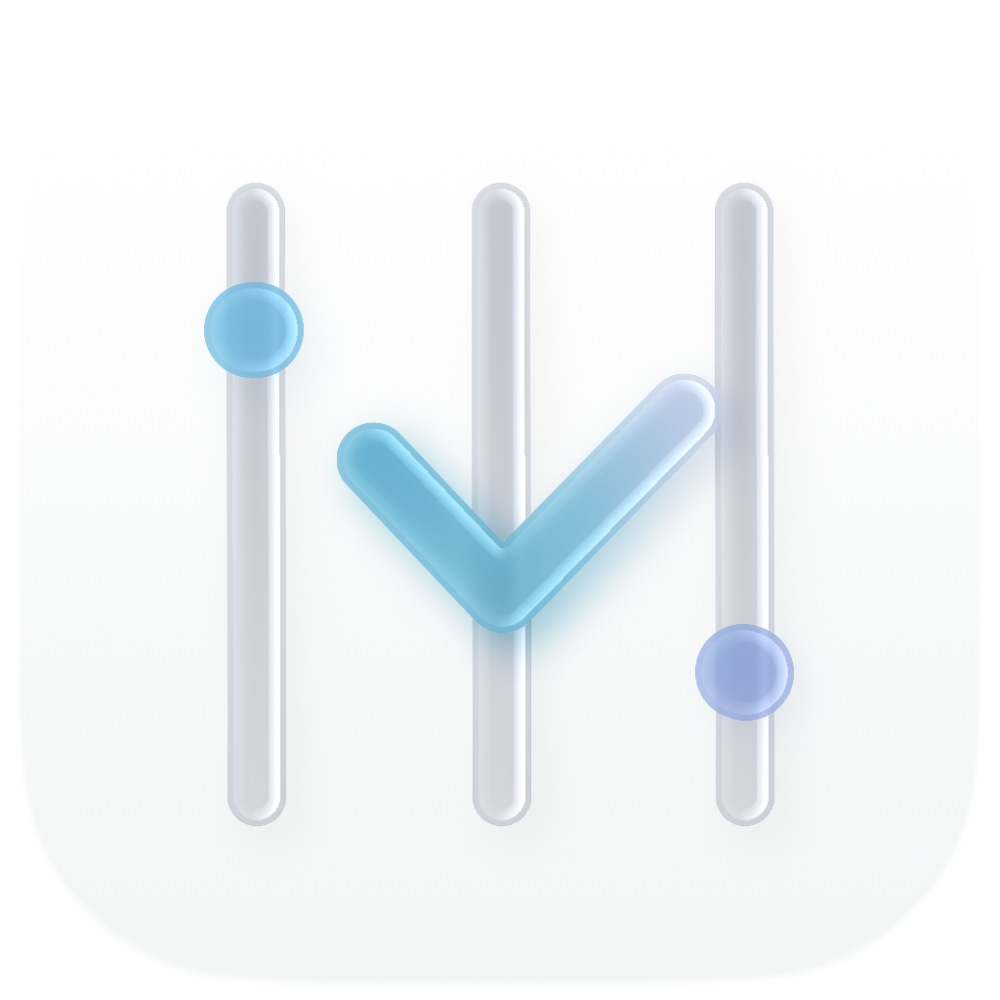
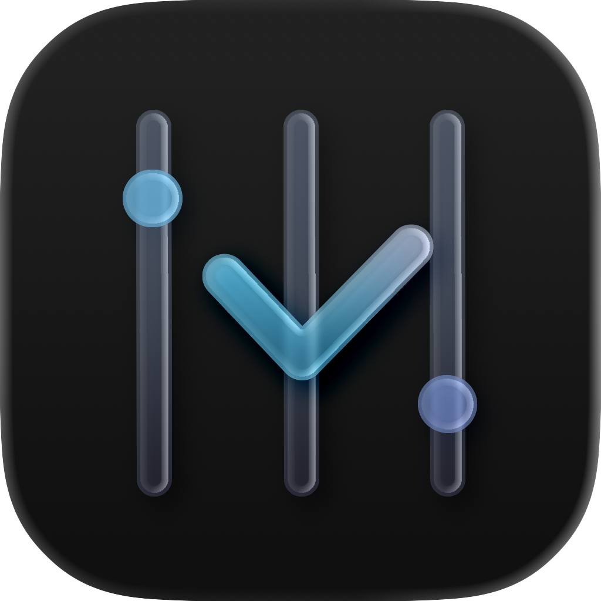
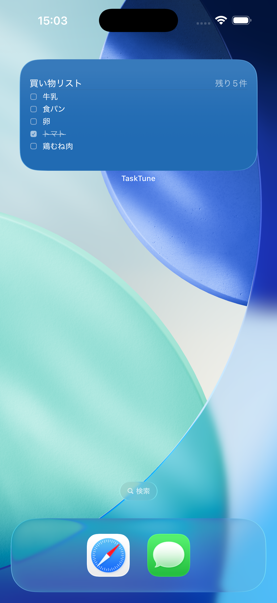
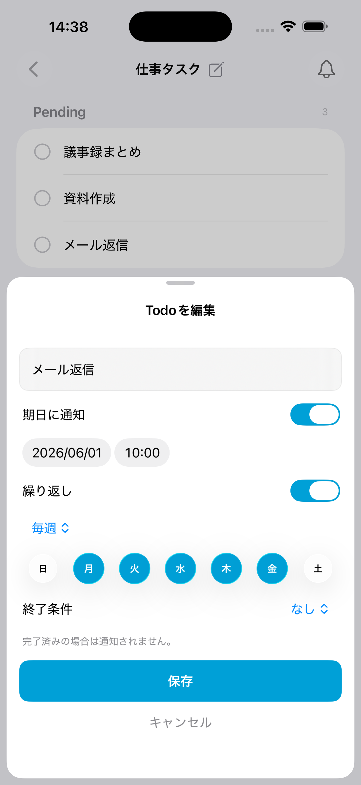
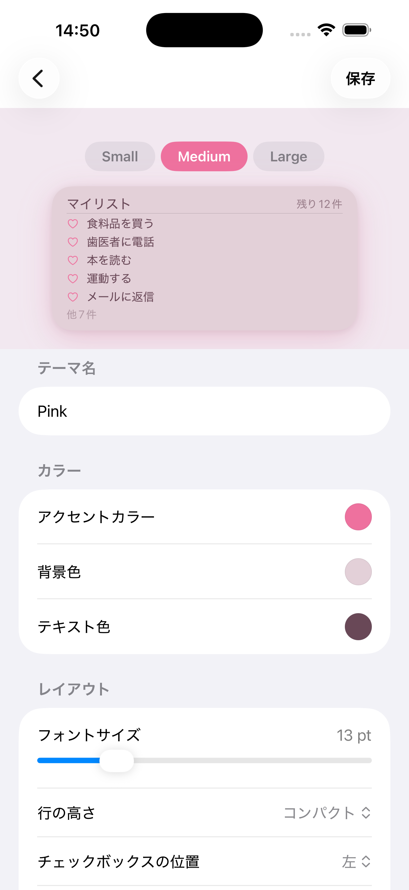

目次
- はじめに
- 完成したもの
- 技術スタック
- 実装の工夫①：インタラクティブウィジェット
- 実装の工夫②：繰り返し通知の先読みスケジューリング
- 実装の工夫③：AVAudioEngineで音声ファイルなし
- 実装の工夫④：SwiftData × App Groupでデータ共有
- まとめ
はじめに
こんにちはこんばんは。イノウエです。
普段iPhoneを使っているのですが、最近Todoリストアプリが欲しいな〜と考えていました。
デフォルトでリマインダーというアプリが入っていたので一時期それを使っていたのですが、いろんな機能がある故にどこから手をつければいいのかわからない感じと、Todoに登録したものを自動で分類してくれるのが結構的外れなことが多くて、だんだん嫌になって使わなくなってしまいました。
（クレンジングオイルを買い物リストに入れたら『パン・スイーツ・シリアル』に分類されていました…🫠）
そこでApp Storeを探したのですが、Todoリストアプリって山ほどあるんですよね🔍
なので人気上位のアプリをいくつも試したんですが、自分が欲しい機能を備えたアプリが見つからず…。
欲しい機能というのは以下のようなものでした。
- シンプルに使えること
機能豊富だとしてもベーシックな使い方も選択できるといいなと。 - 広告が機能を邪魔するほど大量ではないこと
ここはビジネス上仕方ない部分でもあるので、有料アプリも選択肢かなと思いました。 - ウィジェットのデザインをカスタマイズできること
ホーム画面に置くものなので、壁紙と統一感のあるデザインに設定できるのが理想でした。スマホの画面は毎日見るので、気に入ったデザインだと気分が上がります👀✨ - ウィジェット上からそのままタスクを完了できること
いちいちアプリを開かずにタスク完了できたら便利だなと…。
一つ満たしているものはあっても、これらを網羅しているアプリが見つからなかったので、自分で作ることにしました。
iOSアプリ開発は初挑戦のため、かなりハードルは高かったですが、「AIのサポートがあれば新しい領域でも挑戦できるかも」と思いチャレンジしてみました！
成果物のリンク🔗
App Store: https://apps.apple.com/jp/app/tasktune/id6776622457
GitHub: https://github.com/Inoue-KK/TaskTune
完成したもの


主な機能はこちらです。
- 複数リストの管理（作成・名前変更・並び替え・削除）
- Todo管理（追加・編集・完了・削除・並び替え・未完了／完了セクションへの自動振り分け）
- 期日設定とローカル通知（通知バナーから直接完了操作も可能）
- 繰り返しTodo（日・週・月・年、終了条件も設定可能）
- リストリマインダー（未完了件数がある場合のみ発火）
- ホーム画面ウィジェット（Small・Medium・Large、インタラクティブ／読み取り専用を選択可能）
- ウィジェットテーマのカスタマイズ（アクセントカラー・背景色・テキスト色・チェックボックスデザインなど）
- 全リスト横断検索
- 完了時のサウンド＆ハプティクス（ON/OFF切替可能）
- 日英ローカライズ対応
アプリアイコンはiPadとCLIP STUDIO PAINTを使って自分でデザインし、Icon ComposerでLiquid Glass仕上げにしました。
iOS 26ではアイコンをDefault・Dark・クリア・色合い調整の4モードでカスタマイズできるようになっており、すべてのモードに対応しています。
クリアと色合い調整は同じモノクロアセットをiOSが使い回す形（クリアは壁紙が透けるLiquid Glass表示、色合い調整はアクセントカラーで着色）で、実質3つのアセットで4モードに対応しています。
アプリ全体でiOS 26のLiquid Glassデザインを積極的に取り入れているので、アイコンもそれに合わせています。


技術スタック
| 分類 | 技術 |
|---|---|
| 言語 | Swift |
| UI | SwiftUI |
| データ永続化 | SwiftData |
| 通知 | UserNotifications |
| ウィジェット | WidgetKit |
| サウンド | AVAudioEngine |
| データ共有 | App Groups |
| 対応OS | iOS 26.0+ |
SwiftとSwiftUIを選んだ理由
iOSネイティブ開発のスタンダードな選択肢として選びました。
使っている人が多い技術を選ぶと、発信されている情報量も多く、エラーに詰まったときに検索で解決策が見つかりやすいというのが理由です。
SwiftDataを選んだ理由
同じ理由でスタンダードな選択肢として選びました。
実装の工夫①：インタラクティブウィジェット
ホーム画面のウィジェット上からタスクを完了できる機能は、個人的にお気に入りの実装の一つです。
iOS 17から使えるようになったWidgetKitのインタラクティブ機能を活用しています。

チェックボックス領域のみタップを受け付ける
ウィジェット上のタスクのテキスト部分を押しただけで完了してしまうと誤操作が多発するので、完了トグルの受け付けはチェックボックス領域のみに限定しました。
（ちなみにテキスト部分を押した場合は、該当のTodoをアプリで開く仕様にしています。）
インタラクティブウィジェットのタップは AppIntent を介して処理します。
タップ時に呼ばれる CompleteTodoIntent.perform() でSwiftDataを直接操作しています。
struct CompleteTodoIntent: AppIntent {
@Parameter(title: "List Title") var listTitle: String
@Parameter(title: "Todo Title") var todoTitle: String
func perform() async throws -> some IntentResult {
guard let container = try makeModelContainer() else { return .result() }
let context = ModelContext(container)
let lists = try context.fetch(FetchDescriptor<TodoList>())
if let list = lists.first(where: { $0.title == listTitle }),
let todo = list.todos.first(where: { $0.title == todoTitle && !$0.isCompleted }) {
todo.isCompleted = true
try context.save()
// 完了情報を UserDefaults に一時保存（フラッシュ表示に使う）
let info = JustCompletedInfo(listTitle: listTitle, todoTitle: todoTitle, timestamp: Date())
UserDefaults(suiteName: appGroupID)?.set(try? JSONEncoder().encode(info), forKey: justCompletedKey)
}
return .result()
}
}
完了時の即時フィードバック
インタラクティブウィジェットはタップしてもすぐには見た目が変わりません。
データ更新のタイミングでウィジェットが再描画される仕組みのため、操作したのに何も反応しないように見えてしまいます。
これを解消するため、perform() 内で完了情報をUserDefaultsに一時保存し、Timelineプロバイダーがそれを検知したらFlashエントリとNormalエントリの2段構成のTimelineを返すようにしました。
func timeline(...) async -> Timeline<TodoWidgetEntry> {
// 直近5秒以内に完了されたアイテムがあればフラッシュ表示
if let data = defaults?.data(forKey: justCompletedKey),
let info = try? JSONDecoder().decode(JustCompletedInfo.self, from: data),
now.timeIntervalSince(info.timestamp) < 5 {
let flashEntry = fetchEntry(..., justCompleted: info) // チェック済み表示
let normalEntry = fetchEntry(..., date: now.addingTimeInterval(1.5)) // 通常表示に戻る
return Timeline(entries: [flashEntry, normalEntry], ...)
}
return Timeline(entries: [fetchEntry(...)], ...)
}
「ちゃんと押せた」という即時フィードバックを1.5秒間だけ表示することで、操作感が大きく改善しました💡
どうしてもウィジェットのサイズ的に指で的確に操作しづらい部分はあると思っていて、仮に間違ったTodoを完了してしまったとしても『違うものを押してしまった』ということをフィードバックで伝えられるので、誤動作があった場合でもカバーできるかと思います。
（ウィジェット上では完了→未完了の操作は想定していないので、上記の場合はテキストタップでアプリを開いて修正していただくかたちになります）
本当はウィジェット内でTodoをスクロールできれば、このチェックボックスのタップもより操作しやすくなりそうなのですが、調べた限りではウィジェット内のスクロールは今のところできないようで…🥲
もしこちらができるようになったら、対応したいなと考えています。
実装の工夫②：繰り返し通知の先読みスケジューリング
「毎日9時に通知」のような繰り返し通知の実装は、思ったよりも複雑でした。

問題：アプリを長期間開かないと通知が止まる
繰り返し通知を「将来の発火日をあらかじめ登録する」方式で実装しようとすると、iOSのUserNotificationsの制約に当たります。
一度に登録できる通知の上限が64件で、全サイクル分を無制限に先登録することはできません。
かといって1件しか先登録しないと、その1件が発火した時点で次の通知が途切れてしまいます。
アプリを起動するたびに補充すればいいのですが、長期間アプリを開かないと通知が止まってしまいます。
解決策：最大7件の先読みスケジューリング＋フォアグラウンド復帰時の補充
繰り返しTodoの通知を最大7件分まとめて事前登録することにしました。
アプリを開かなくても7サイクル分は通知が継続して発火し、フォアグラウンドに戻ったタイミングで不足分を補充（top-up）します。
64件という上限がある以上、何かしら取捨選択は必要になります。
「通知が来るはずなのに来ない」はアプリへの信用問題になりかねないので、できるだけ忠実に通知を届けたいという気持ちがありました。
一方で、7回通知が来ても反応がないならもうアプリを使っていないと判断できる、という考え方もあり、7件という数はその折り合いとして設定しています。
// 繰り返し: 未来 N サイクル分を先読み登録（完了済みなら現サイクルはスキップ）
let dates = upcomingCycleDates(for: todo, count: Self.maxScheduledOccurrences)
for (index, date) in dates.enumerated() {
let content = makeContent(for: todo, dueDate: date)
let trigger = makeTrigger(for: date)
let id = "\(todo.notificationID)_\(index)"
try? await center.add(UNNotificationRequest(identifier: id, content: content, trigger: trigger))
}
完了時は現サイクルの通知のみキャンセルし、先読みした将来の通知はそのまま維持します。
「完了したのにまた通知が来た」という事態を防ぎながら、先読み分も無駄にしません。
また、フォアグラウンド復帰時に期日が過ぎた繰り返しTodoをスキャンし、未完了だったものは missedCount を加算して次の周期へ自動前進させます。
アプリを開いていない間に過ぎたタスクも、きちんと「やり残した」として記録されます。
実装の工夫③：AVAudioEngineで音声ファイルなし
今回の設計方針として、Todoの完了をポジティブなものにしたいという思いがありました。
やるべきことが完了した喜びといいますか、チェックマークを押したくなるような作りにしたく、その一環として完了時のサウンドを追加しました。
せっかくならフリー素材を使うのではなく、音も自分で作りたいなと思い、AVAudioEngineというものを見つけました。
AVAudioEngineを使えばコードだけで波形を生成して音を鳴らせることがわかり、採用しました。
周波数・音の長さ・減衰をパラメータとして定義し、AVAudioPlayerNode で再生しています。
private class SoundPlayer {
private let engine = AVAudioEngine()
private let node = AVAudioPlayerNode()
init() {
engine.attach(node)
engine.connect(node, to: engine.mainMixerNode, format: format)
try? AVAudioSession.sharedInstance().setCategory(.ambient, options: .mixWithOthers)
try? engine.start()
}
func play(_ sound: CompletionSound) {
guard let buffer = makeBuffer(for: sound, format: format) else { return }
node.scheduleBuffer(buffer)
node.play()
}
}
音の種類はGlint・Bubble・Level Upなど計7種類で、それぞれ周波数や時間を細かく調整して作りました。
音声ファイルが一切不要なので、アプリのバンドルサイズも増えません。
AVAudioSession のカテゴリを .ambient に設定しているので、システムのメディアボリュームに連動します。
マナーモード中は鳴らないようにも設定できます。
実装の工夫④：SwiftData × App Groupでデータ共有
メインアプリとウィジェットExtensionは、そのままでは別プロセスとして動作するためデータを共有できません。
つまり、ウィジェットがメインアプリのTodoデータを表示するには、共通のデータストアが必要となります。
App Group経由の共有ストア
ModelContainer をApp Group内のURLに向けることで、メインアプリとウィジェットExtensionが同じSwiftDataストアを参照するようにしました。
let sharedURL = FileManager.default
.containerURL(forSecurityApplicationGroupIdentifier: "group.com.yourname.tasktune")! // ← 実際のIDに変更
.appendingPathComponent("tasktune.store")
let config = ModelConfiguration(url: sharedURL)
let container = try ModelContainer(for: TodoList.self, configurations: config)

ウィジェットテーマのUserDefaults共有
ウィジェットのテーマ設定（カラーやフォントなど）はApp GroupのUserDefaultsにJSONで保存し、ウィジェットExtensionから直接読み込むようにしました。
メインアプリでデザインを変更すると、ウィジェットにも自動で反映されます。
まとめ
「欲しいアプリがないなら作る」という、シンプルな動機から始めた個人開発でした。
Swift・SwiftUI・WidgetKitはすべて初挑戦でしたが、自分の理想とするアプリをかたちにしてリリースまで持っていけたのが何より嬉しかったです。
よかったらApp Storeからダウンロードしてみてください。
広告なし・カスタマイズ自由なTodoアプリ、気に入ってもらえると嬉しいです🎉
App Store: https://apps.apple.com/jp/app/tasktune/id6776622457
こちらのブログは個人開発の記録やアウトプットの一環として執筆しております。
内容に誤りがある可能性がありますのでご了承ください。